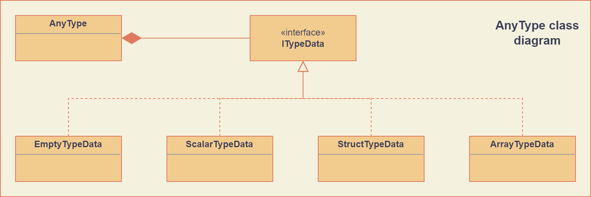

AnyType
The AnyType class represents runtime introspectable types for empty, scalar, structured or array
values. Objects of this type respect value semantics and can easily be passed, assigned or returned
by value.
Architecture
To support value semantics, the design is based on a single concrete AnyType class that contains
polymorphic implementations for the different types supported (scalar, array, etc.)
The following figure shows the relevant part of the class diagram.
Although largely an implementation detail, the underlying ITypeData of an AnyType object is
never shared between different objects. This prevents nasty surprises when using these objects in a
multithreaded environment.
Construction
Typically, AnyType objects are created in one of two ways:
Statically: they are encoded directly by the programmer.
Dynamically: the types are runtime generated by parsing some other data structure.
To accomodate for these different use cases, the AnyType class provides different options to
create a specific type object.
Empty type
The empty type is provided as a default null type, meaning that corresponding values do not contain any data.
Empty types can be created by copying a global constant object EmptyType or by using the default
AnyType constructor:
// Use the globally defined (const) EmptyType:
auto empty_type = EmptyType;
// Use default constructor to create an empty type:
AnyType empty_type{};
Scalar types
Scalar types provide the elementary building blocks of all AnyType objects. Their
corresponding value objects contain a single arithmetic type (including booleans) or a
string.
Similar to the empty type, scalar types can be constructed in one of two ways.
They can be directly copied from a constant global AnyType object:
// Create a boolean type:
auto bool_type = BooleanType;
The anytype.h header currently defines the following global constant scalar type objects (the
numbers in the identifiers refer to the bit length of the corresponding values):
extern const AnyType BooleanType;
extern const AnyType Character8Type;
extern const AnyType SignedInteger8Type;
extern const AnyType UnsignedInteger8Type;
extern const AnyType SignedInteger16Type;
extern const AnyType UnsignedInteger16Type;
extern const AnyType SignedInteger32Type;
extern const AnyType UnsignedInteger32Type;
extern const AnyType SignedInteger64Type;
extern const AnyType UnsignedInteger64Type;
extern const AnyType Float32Type;
extern const AnyType Float64Type;
extern const AnyType StringType;
Alternatively, scalar types can be constructed by passing a TypeCode enumerator, denoting the
scalar type, to the constructor:
// Create an unsigned 16-bit integer type:
AnyType uint16_type(TypeCode::UInt16);
The following scalar type enumerators are supported:
-
enumerator TypeCode::Bool
Boolean type, corresponding to
true/falsevalues.
-
enumerator TypeCode::Char8
8-bit character (undefined signedness)
-
enumerator TypeCode::Int8
-
enumerator TypeCode::Int16
-
enumerator TypeCode::Int32
-
enumerator TypeCode::Int64
Signed integer types with the given number of bits.
-
enumerator TypeCode::UInt8
-
enumerator TypeCode::UInt16
-
enumerator TypeCode::UInt32
-
enumerator TypeCode::UInt64
Unsigned integer types with the given number of bits.
-
enumerator TypeCode::Float32
-
enumerator TypeCode::Float64
Floating point types with 32 and 64 bits respectively.
-
enumerator TypeCode::String
Type representing character strings.
Array types
Array types represent fixed size arrays of values of the same type. These are constructed using a dedicated constructor:
// Create array type containing 20 boolean values and provide a name:
AnyType my_bool_array(20, BooleanType, "TwentyBooleans");
The last argument of this constructor is optional and if not provided, the typename will be an empty string.
Array types with zero size are allowed, since elements can be added later. However, this implicitly changes the type, since its size if part of the type.
Structured types
Structured types are key to providing flexible types that are composed of simpler ones. Contrary to array types, they can contain different subtypes. This allows users to compose any kind of nested structure.
A structured type can be constructed by adding subtypes to an originally empty structure. This step by step construction is mainly meant to support runtime construction. The following example shows how this is achieved:
// Create simple structured type containing:
// - an account name of StringType
// - an account number of UnsignedInteger64Type
// - an activated flag of BooleanType
auto account_type = EmptyStructType("AccountType");
account_type.AddMember("AccountName", StringType);
account_type.AddMember("AccountNumber", UnsignedInteger64Type);
account_type.AddMember("Activated", BooleanType);
Although the example showed only the addition of scalar members/subtypes, the only restriction is
that member types need to be AnyType objects. As a result, one can create structures of
structures, structures of arrays, arrays of structures, structures of empty values, etc.
To facilitate the static creation of structured types, a dedicated constructor can be used that accepts a braced-init-list of pairs of member names and types. This constructor also allows to provide a name for the type, which then needs to be passed as a final optional argument to the constructor:
// Create a customer type that contains:
// - a name (StringType)
// - an address structure, containing:
// - a street field (StringType)
// - a number field (UnsignedInteger16Type)
// - a city field (StringType)
// And provide a type name: "CustomerType".
AnyType customer_type({
{"name", StringType},
{"address", {
{"street", StringType},
{"number", UnsignedInteger16Type},
{"city", StringType}
}}
}, "CustomerType");
Copy and move
The AnyType class provides copy and move constructors and assignment operators that behave as
one would expect from objects with value semantics. In general, the underlying types are always
overwritten.
The following example shows this behavior:
// Create a boolean type:
auto my_type = BooleanType;
// Create an array of 5 signed integers:
AnyType my_array(5, SignedInteger32Type);
// Overwrite the first type. Afterwards, my_type encodes an array of 5 signed integers.
my_type = my_array;
Query methods
The AnyType API contains a number of methods for querying specific information about the type.
These are listed here.
-
TypeCode AnyType::GetTypeCode() const
- Returns:
TypeCode enumerator.
Retrieve the typecode enumerator for this object.
Besides the scalar type enumerators listed above, there exist three additional enumerators:
-
enumerator TypeCode::Empty
Enumerator for the empty type.
-
enumerator TypeCode::Struct
Enumerator for a structured type.
-
enumerator TypeCode::Array
Enumerator for an array type.
-
std::string AnyType::GetTypeName() const
- Returns:
Type name.
Retrieve the type name.
-
bool AnyType::HasField(const std::string &fieldname) const
- Parameters:
fieldname – Member name to search for.
- Returns:
truewhen a subtype with the given name exists.
Check the presence of a subtype with the given name. Composite names are supported.
-
std::vector<std::string> AnyType::MemberNames() const
- Returns:
List of member names.
Return an ordered list of all direct member names.
-
std::size_t AnyType::NumberOfMembers() const
- Returns:
Number of direct members for structured types and zero otherwise.
Retrieve the number of direct members. This is always zero for non-structured types.
-
AnyType AnyType::ElementType() const
- Returns:
Type of elements in this array type.
- Throws:
InvalidOperationException – When current type is not an array type.
Retrieve the
AnyTypeobject corresponing to the array elements.
-
std::size_t AnyType::NumberOfElements() const
- Returns:
Number of elements for an array type and zero otherwise.
Retrieve the number of elements in the array. Returns zero when the current type is not an array type.
Element access
The AnyType class overloads the index operators to provide a natural way to access element types
of a structured type. Since array types have only one single type associated to their elements, no
dedicated overload exists (see AnyType::ElementType()).
The overloaded operators are:
-
AnyType &AnyType::operator[](std::string fieldname)
- Parameters:
fieldname – String encoding the path to a specific underlying type.
- Returns:
AnyTypeobject if member type was found.- Throws:
InvalidOperationException – For types that do not support element access (empty or scalar types) or for fieldnames that cannot be correctly parsed/interpreted (wrong format or unknown key).
Try to retrieve a reference to the member that is identified by the fieldname. This fieldname can describe non-direct members by encoding the navigation to deeper lying members. A dot (
.) is used to separate individual names of structure members, while an empty set of square brackets ([]) is used to access the element type for array types.
-
const AnyType &AnyType::operator[](std::string fieldname) const
Const version of the previous operator overload.
Modifier methods
The AnyType API currently contains only one method for modification, which applies only
to structured types:
-
AnyType &AnyType::AddMember(const std::string &name, const AnyType &type)
- Parameters:
name – Member name to use.
type –
AnyTypeobject for the member type.
- Returns:
Reference to
thisto allow chaining such calls.- Throws:
InvalidOperationException – If this operation is not supported (e.g. not a structured type or trying to add an empty type).
Add a member type for this structured type with the given name and type. Empty types are not allowed as member types.
Comparison operators
Simple comparison of AnyType objects is supported by overloading both the equality and
inequality operator:
-
bool AnyType::operator==(const AnyType &other) const
- Parameters:
other – Other
AnyTypeobject to compare with the current.- Returns:
truewhen equal,falseotherwise.
-
bool AnyType::operator!=(const AnyType &other) const
- Parameters:
other – Other
AnyTypeobject to compare with the current.- Returns:
truewhen not equal,falseotherwise.
Note
Equality in the context of AnyType objects requires exact equality:
Empty types are only equal to other empty types.
Scalar types are only equal to the exact same scalar type.
Structured types are only equal to other structured types with the same type name, member names and types. The order of members is also taken into account.
Array types are only equal to other array types with the same type name, same element type and number of elements.